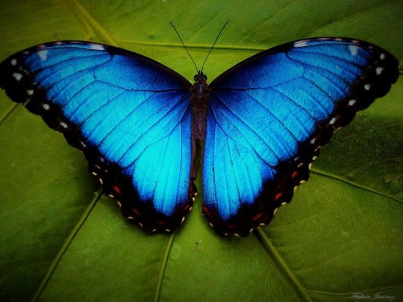
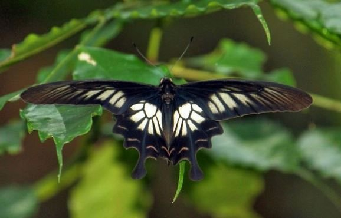
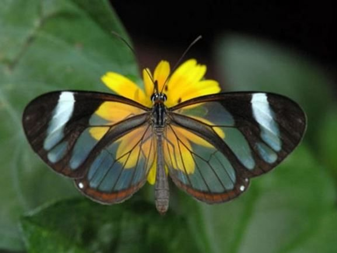
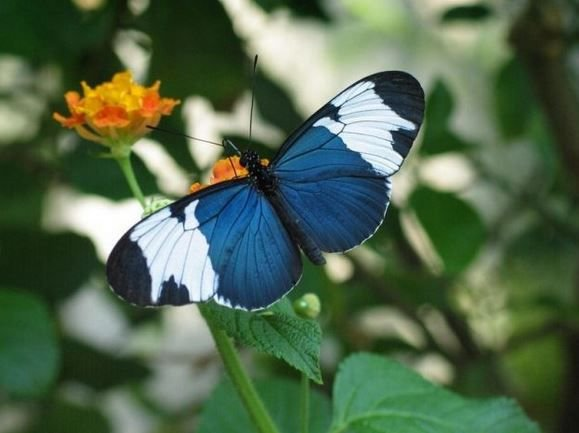
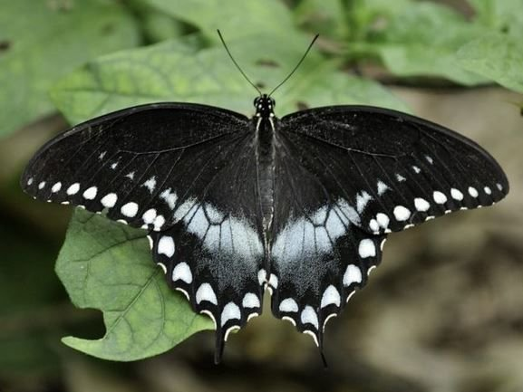
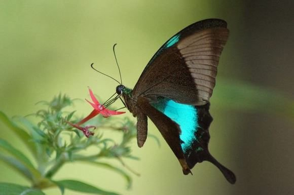

Beberapa Referensi Tentang jenis tentang Kupu-Kupu
Jenis kupu-kupu dengan ciri khas unik yang pertama adalah The Blue Morpho. Jenis kupu-kupu ini memiliki sayap yang terbilang cukup besar. Pada sayapnya, Anda bisa melihat gradasi warna biru dan hitam sehingga membuat kupu-kupu ini terlihat sangat memukau dan memesona. Kemudian tambahan corak bintik putih dan merah di sepanjang sayapnya membuat kupu-kupu ini menjadi begitu elegan. Kupu-kupu ini memiliki habitat di hutan hujan Brasil dan Venezuela. Kupu kupu jantan memiliki warna yang sangat cerah, sedangkan betina tidak berwarna secerah yang dimiliki jantan.
Jenis kupu-kupu dengan ciri khas unik yang ketiga adalah The Sri Lankan Ceylon Rose. Anda bisa langsung mengenali jenis kupu-kupu ini ketika melihat bentuk sayap mereka. Bentuk sayap yang memanjang di bagian atas dekat dengan kepala serta memiliki beberapa lekukan-lekukan di bagian bawah sayap membuat bentuk kupu-kupu sangat khas dan unik. Tampilan sayap yang berwarna hitam, putih, serta sedikit warna cokelat, menambah kupu-kupu ini semakin terlihat elegan.
PJenis kupu-kupu dengan ciri khas unik yang kedua adalah The Glasswing Butterfly. Ketika Anda melihat jenis kupu-kupu ini, Anda akan terkesima dengan keunikan yang dimilikinya. Hal ini karena sayap pada kupu-kupu ini tempus pandang. Dengan tulang-tulang sayap yang menghiasi sayap tembus pandang tersebut, menambah keunikan mereka. Kecantikan The Glasswing Butterfly semakin bertambah dengan warna hitam, putih, serta sedikit warna cokelat yang menghiasi ujung sayapnya..
Jenis kupu-kupu dengan ciri khas unik yang keempat yaitu Sapho Longwings. Jenis kupu-kupu yang cantik ini bisa ditemui di kawasan Meksiko dan Ekuador. Memiliki corak dengan dominasi warna biru navy serta dihiasi dengan warna putih di tengah sayap membuat tampilan kupu-kupu ini terlihat sangat memesona dan juga unik.
Jenis kupu-kupu dengan ciri khas unik yang kelima adalah Spicebrush Swallowtails. Jenis kupu-kupu ini juga merupakan jenis yang terbesar di dunia. Rentang sayap kupu-kupu ini bisa mencapai 4 inchi. Kupu-kupu ini dihiasi dengan warna hitam dan sedikit warna putih sehingga membuatnya terkesan misterius dan unik.
Jenis kupu-kupu dengan ciri khas unik yang keenam yaitu Malabar Banded Peacock. Bersiaplah terpesona dengan tampilan warna yang ada pada kupu-kupu ini. Kupu-kupu ini memiliki warna sayap hitam sedangkan bagian dalam sayapnya berwarna turquoise, sehingga membuatnya terlihat sangat anggun. Anda bisa menemui jenis kupu-kupu ini di daerah Ghats barat India. Sayangnya, jumlah kupu-kupu cantik ini sudah mulai berkurang.
| Nama : Tri Ayu Zahidah |
| NIM : 10122070 |
| Kelas : IF-2 |